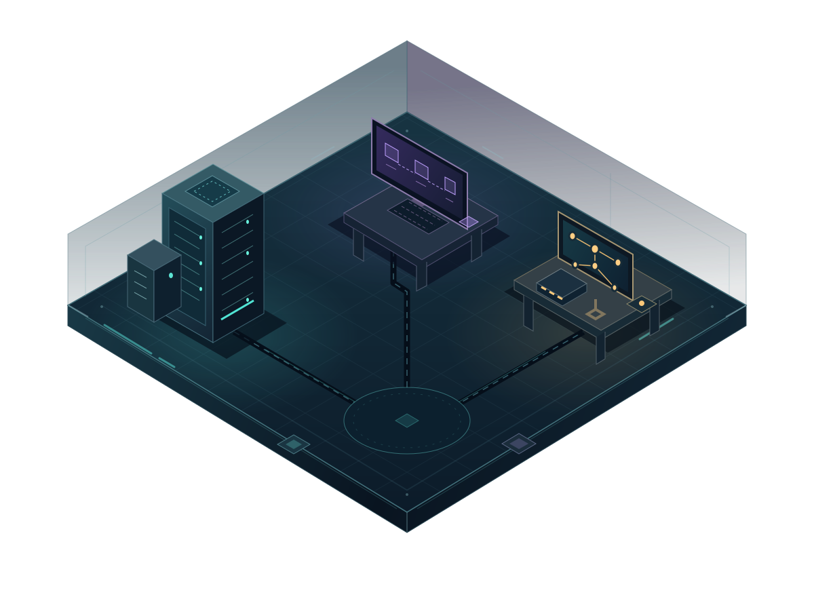

Toca una estación. Axiom te acompaña.
BIENVENIDO AL OTRO LADO
Soy Axiom, el ciberasistente de Serch. El laboratorio está abierto: elige una estación y resolvamos algo juntos.
Hay una señal fuera de lugar. No todo en este laboratorio es lo que parece.
Sin cronómetro. Puedes equivocarte, aprender y volver a intentar. Tu avance dura esta visita.
Toca una estación en el mapa o elige una misión de la lista. Lee la situación, elige una respuesta y descubre por qué. Cada misión tiene tres decisiones.
Con teclado: Tab para moverte, Enter o espacio para elegir y Escape para cerrar. Fuera de los campos, escribe AXIOM y observa qué pasa. En celular, toca la señal { ? }.
Puedes pausar las animaciones. También respetamos la preferencia de movimiento reducido de tu dispositivo.
Activa JavaScript para recorrer el laboratorio. Volver al sitio.